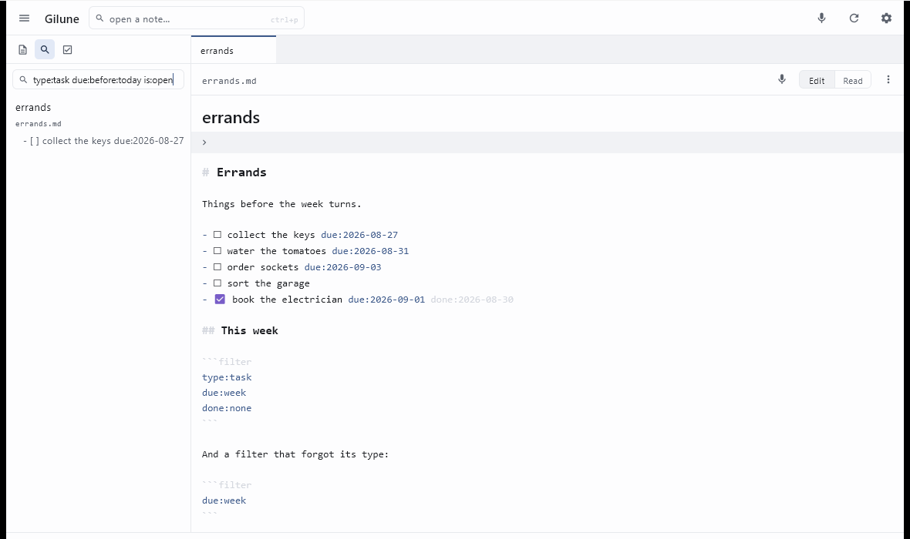

Search
Gilune has two ways of finding things: one for when you know the note's name, and one for when you know something that is written inside it.
Two boxes, two jobs
To open a note you can name, press Ctrl + P. This is the box in the top bar. Type any part of the name, and Enter opens the best match — or click one of the suggestions underneath. It looks at names only, which is what makes it quick.
To search what your notes say, press Ctrl + F. This opens the Search panel in the sidebar, and it is where the query language below applies. If the sidebar is collapsed, the shortcut reopens it for you.

Each note that matches shows up to five of its matching lines. If there are more than five, the rest are counted rather than listed. Notes found only by their name or by their properties are real results with no line to quote. Notes whose name matched come first, then notes with the most matches, and clicking any result opens that note — click one of its quoted lines and the cursor lands on that line.
The query language
The rules are short. Every term has to match — putting two words in the box means "both of these", not "either of these". Everything is case-insensitive, with one small exception: a term of only one or two letters matches accented capitals exactly as typed. Three letters and up never mind.
The basics
| You type | What it means |
|---|---|
harbour |
Notes whose text or name contains harbour. |
harbour ferry |
Notes containing both words, anywhere, in any order. |
"harbour ferry" |
The two words next to each other, as a phrase. |
harbour -ferry |
harbour, but not in notes that also mention ferry. A
leading - excludes, and it works on any term below too. |
Narrowing by name, path or body
| Keyword | What it does | Example |
|---|---|---|
file: |
The note's name contains this. | file:meeting |
path: |
The note's folder path contains this. | path:Projects/ |
content: |
The note's body text contains this — useful when you want to match the words but not the name. | content:invoice |
Properties
Properties are the key: value pairs at the top of a note. Plain
words do not look at them; square brackets do.
| You type | What it means |
|---|---|
[tags:home] |
Notes with a tags property whose value contains
home — so this also finds a note tagged home, chores. |
[project] |
Notes that carry a project property at all, whatever it
says. |
-[project] |
Notes with no project property. |
Searching tasks
By default a result is a whole note. type:task changes what a result
is: each result becomes a single task line. That also brings three more
keywords into play — due:, done: and is: —
which only mean anything alongside type:task.
The task type comes from the tasks plugin. Switch that plugin off
and type:task finds nothing, and due: goes back to being
an ordinary word to search for. Nothing in your notes changes either way.
| You type | What it means |
|---|---|
type:note |
Each result is a note. This is what you get without saying anything. |
type:task |
Each result is a task line. On its own, it lists every task in the vault. |
type:task invoice |
Tasks whose line contains invoice. |
Due and done dates
due: and done: take exactly the same values.
due: is the date you set on a task. done: is when it was
finished: the done: date on the line if it has one, and otherwise the
day Gilune saw the box get ticked — so a task ticked in another app still has a
finish date. Nothing is written into your note to work that out.
Every value is worked out each time the search runs, so a saved query never goes stale. Under the search box, a quiet line says which days your query took — done 26 Oct – 1 Nov 2026 — and a value Gilune cannot read is named in red, with a suggestion when it looks like a typo.
A day
| Value | What it matches | Example |
|---|---|---|
2026-09-04 |
That exact day. | type:task due:2026-09-04 |
today, yesterday, tomorrow |
The day you would expect. | type:task done:yesterday |
-7d, +3d, -2w, -1m,
-1y |
Counted from today in days, weeks, months or years. | type:task due:+3d |
lastmonday … lastsunday |
The most recent one, today included. | type:task done:since:lastsunday |
monday … sunday |
The next one, never today — as in the / menu. |
type:task due:friday |
A period
| Value | What it matches | Example |
|---|---|---|
thisweek, thisworkweek |
The whole calendar week, or its Monday to Friday. Weeks start on Monday unless you change it in the Tasks plugin's settings. | type:task done:thisweek |
thismonth, thisquarter, thisyear |
The whole month, quarter or year. | type:task done:thismonth |
lastweek, lastmonth, lastquarter,
lastyear |
The one before. | type:task done:lastweek |
2026-09, 2026-Q3, 2026 |
That month, quarter or year. | type:task done:2026-Q3 |
thismonth-1m, thisweek+1w |
An offset after a period moves the whole period: last month, next week. | type:task due:thisweek+1w |
A minus or plus sign always means counting: no name contains one, so
thismonth-1m can only mean "this month, one month back".
Comparing and ranges
| Value | What it matches | Example |
|---|---|---|
since:…, until:… |
From the start of that day or period onwards, or up to its end — both including it. | type:task done:since:-7d |
after:…, before:… |
After it or before it, not including it. before:thisweek
is everything up to last Sunday. |
type:task due:before:today |
…..… |
From the start of the first to the end of the second. | type:task done:2026-07..2026-09 |
overdue |
Strictly before today. Something due today is not overdue. | type:task due:overdue |
week |
Today and the six days after it — the next seven days, not the calendar week. | type:task due:week |
none |
No date at all. So -due:none is how you say "has a due
date". |
type:task due:none |
A space always starts a new term, so due:after:next week is not a
query; due:after:thisweek is.
When a box was ticked before Gilune first saw the note — a list you brought in
from elsewhere, already ticked — nobody knows when it was finished, so it has no
finish date: type:task is:done done:none lists those. A box ticked in
another app is dated when Gilune next looked at the note, which may be later than
the moment you ticked it if Gilune was closed.
Ticked or not
| You type | What it matches |
|---|---|
is:open |
Tasks that are not ticked — - [ ]. |
is:done |
Tasks that are ticked — - [x]. |
-is:done |
The same as is:open, since a task is one or the other. |
Some queries worth stealing
| Query | Answers |
|---|---|
type:task is:open due:overdue |
What have I let slip? |
type:task is:open due:week |
What is coming up this week? |
type:task is:open -due:none path:Work/ |
Open work tasks that have a date on them. |
type:task done:thisweek |
What did I actually finish this week? |
type:task done:since:-7d |
What did I finish in the last seven days? |
type:task is:open due:none [project] |
Undated tasks in notes belonging to a project. |
When a query does not do what you expected
- A keyword nobody recognises becomes an ordinary search. Type
colour:blueand Gilune looks for the text colour:blue rather than throwing your results away. A typo costs you nothing. - But a bad value inside a real date keyword matches nothing, and says
so.
due:soonishhas asked a date question that cannot be answered, so it returns no results rather than quietly searching for the word — and the line under the search box names it, with a suggestion when it looks like a typo (thismnth— did you meanthismonth?). The same goes for a date that does not exist, likedue:2026-02-30. - There is no or, and no brackets for grouping. Every term has to match. To ask an either/or question, run two searches.
- Plain words do not search properties. Use
[key:value]for those. - You cannot search for a quotation mark, because quotes are how a phrase is marked out.
- Say
type:once. If a query names it twice, the first one wins. - Only Markdown notes are searched, and folders whose name begins with a dot are skipped.
Using a query inside a note
The same language works in a filter block, which turns a query into
a live list embedded in one of your notes.
That is covered on the tasks page →